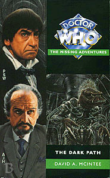

|
The Dark Path
|
BASIC PLOT DOCTOR COMPANIONS MATERIALISATION CIRCUIT Pg 151 and 174 in the shadow of a neon-decked entertainment complex, the city, Darkheart. Pg 275 The Piri Reis's flight deck. PREPARATORY READING CONTINUITY REFERENCES Pg 2 "Even the soulless Daleks had an unfathomable predilection for disc-shaped craft." The Dalek Invasion of Earth. "You think like a Usurian." The Sun Makers. Pg 3 "Send it to the Federation Chair on Alpha Centauri." The chairman delegate in The Curse of Peladon was from Earth, by now it is clearly Alpha Centauri's turn. Pg 10 "The room also contained an eclectic mixture of bric-a-brac from various eras, such an an ormolu clock and a Louis XIV chair." The ormolu clock was seen during the early Hartnell stories. A Louis XIV chair features in City of Death. Pg 11 "The cancerlike intelligence that had tried to grow across Vortis was one of the nastiest opponents Jamie could envision. Even the Cybermen were more bearable" Twilight of the Gods, The Moonbase/Tomb of the Cybermen. Pg 12 "The last time it became active, it was a Dalek time machine that was following tha TARDIS." The Chase. "Her father, Edward Waterfield, had been killed by the Daleks when Jamie and the Doctor had first met her." Evil of the Daleks. "In the bloody aftermath of Culloden [...] he and his fellow Jacobites had had other things on their mind than quantum physics." The Highlanders. Pg 16"It must be something worse then the Cybermen, Yeti or other beasties they had faced." The Moonbase/Tomb of the Cybermen, The Abominable Snowmen/The Web of Fear. Pg 21 "When the Empress died, most of Centcomp's data structures fell apart." The Empress died in So Vile A Sin. Pg 35 "For one thing, it was almost as cold as it had been in Tibet." The Abominable Snowmen. "At least in twenty-first century Australia, the flying machines had had rotating wings" The Enemy of the World. Pgs 41-42 "There'll be a sun in the daytime, unless this planet moves like Vortis." Twilight of the Gods. Pg 50 "The suite was quite luxurious, even more so than Salamander's palace had been on earth" The Enemy of the World. Pg 51 "Not all aliens are out for blood like the Daleks or Cybermen, you know. Even the Ice Warriors were just looking for a home." Evil of the Daleks, The Moonbase/Tomb of the Cybermen, The Ice Warriors. Pg 52 "The Sons of Earth and similar groups had propounded such nonsense" The Power of Kroll. Reference to Dalek and Cyber wars. Pg 63 "These logs are from the Brittanica Base on earth." The Ice Warriors. "We know Daleks can travel in time" Probably from The Chase. Pgs 76-77 "This sort of security was provided by Landsknechte or Naval troops." Original Sin. Pg 92 "She felt that, in many ways, this planet was even stranger than Vortis." Twilight of the Gods. Pg 93 "These days it seemed that her grief at the Daleks' murder of her father had become more manageable." Evil of the Daleks. "The Doctor had once predicted that her family would sleep in her mind" Tomb of the Cybermen. Pg 97 "The corridor ended in a mural depicting the conquest of Solos" The Mutants. Pg 99 "One of the Solonian Mutts on the mural moved" The Mutants. Pg 102 "It was a huge structure, larger than Khufu's pyramid at Giza, and perhaps even wider than any of the great pyramids on Phaester Osiris." Pyramids of Mars. Pg 111 Reference to Cybermen. Pg 124 "After all, hadn't she disguised herself as a Menoptera to try to rescue the Doctor and Jamie?" Twilight of the Gods. Pg 131 "Her father and his partner Theodore Maxtible had often brought home chunks of iron ore" Evil of the Daleks. Pg 136 "The Daleks had been able to do that via a cabinet of mirrors, he recalled." Evil of the Daleks. Pg 139 "I believe it is a time-flow analogue." The Time Monster. Pgs 142-143 "It was so easy to look at the history of events a thousand years ago, when a whole generation of every Pack was wiped out by the Tzun Confederacy" The Tzun were seen in First Frontier. Pg 151"There is a sort of safety override, if I can remember how it works." This is very likely the Hostile Action Displacement System, seen in The Krotons. Pg 155 "What wouldn't I give to have a Mentiad on board right now." The Pirate Planet. Pg 163 "Is this the Brittanicus Ice Base?" The Ice Warriors. Pg 172 "Anyway, if the Blinovitch Limitation Effect didn't make such direct changes in one's personal past impossible" First mentioned in Day of the Daleks. Pg 175 "Adjudicator Secular Brandauer remembered being one of the best detectives in the Overcities" The Overcities were seen in detail in Original Sin. Pg 177 "At around the same time this group came here, a similar team searching for a means to prolong the Empire went to the planet Avalon." The Sorcerer's Apprentice. Pg 183 "There is a portrait in the Emperor's palace on Draconia." This was also mentioned in Frontier in Space. Pg 191 "When I first met the Doctor, my father was murdered by these Dalek creatures" Evil of the Daleks. "The Doctor said that in time he would sleep in my mind and I'd forget unless I chose to remember." Tomb of the Cybermen. "He must be about 450 years old too." Tomb of the Cybermen. Pg 195 "Remember what my people did to S'Arl." First Frontier. Pg 198 "The thought of, say, the Menoptera being wiped from existence was too horrible to contemplate." Twilight of the Gods. Pg 200 "The destruction of Mondas, the Battle of Cassius" The Tenth Planet, The Battle of Cassius is mentioned in The Crystal Bucephalus as the decisive battle which broke the Daleks' hold of the Solar System during the 22nd century invasion. (With thanks to Cameron Dixon for spotting this.) "Right now he was working on one of the triumph of the glittergun over the Cybermen." Revenge of the Cybermen. Pg 201 "As termintes consume the wood they live in, so the Chronovores exist in the vortex, and feed upon time itself." The Time Monster. Pg 208 "Hakkauth could probably break an Ice Warrior in half with one hand." The Ice Warriors. Pg 209 "I am no shapeshifter like the Rutan." First mentioned in The Time Warrior and first seen in The Horror of Fang Rock. Pg 211 References to Tzun, Daleks, Cybermen and Martians. Pg 222 "'Ah!' He flourished a slim metal rod." This is clearly the sonic screwdriver, making an appearance before its TV debut in Fury from the Deep, the next televised story. (With thanks to Tim Snelling.) Pg 237 Reference to Tzun Stormblades (seen in First Frontier). Pg 258 Reference to Skaro and the Daleks. Pg 259 "After all, didn't the Doctor himself engineer a civil war on Skaro?" Evil of the Daleks. Pg 272 Reference to S'Arl (First Frontier). Pg 282 References to Daleks and Cybermen. "I've crossed from one side of the galaxy to the other, picking up the pieces in conflicts from the Madillon Cluster to the Skonnon Empire" The Horns of Nimon. Pg 283 References to Chronovores and the Tzun. Pg 287 Reference to Daleks. Pg 295 "We're landing in the sea!" Fury from the Deep. OLD FRIENDS AND OLD ENEMIES We also see Terileptils, Draconians and Alpha Centaurans. The setting features Adjudicators (first seen in Colony in Space), the remnants of the Earth Empire (seen throughout the NAs, culminating in So Vile A Sin) and the Federation which supplanted it (Curse of Peladon). NEW FRIENDS AND NEW ENEMIES The Veltrochni turn up again, most notably in Mission: Impractical and
a parallel Koschei is later seen in Face of the Enemy.
CONTINUITY COCK-UPS PLUGGING THE HOLES [Fan-wank theorizing of how to fix continuity cock-ups] FEATURED ALIEN RACES Terileptils. Draconians. A Xarax, scorpion-like aliens, from Dancing the Code (page 17). But see Continuity Cock-Ups. Alpha Centaurans. FEATURED LOCATIONS A dragon cruiser (page 2). The ISS Foxhound. The planet Darkheart. The Piri Reis. The Zathakh. Inside the Darkheart sun (on the other side of a dimensional bridge). Terileptus. (Page 63 states that it's approximately 300 years since the events of The Ice Warriors, making this c 3300.) IN SUMMARY - Robert Smith? |
|
 |